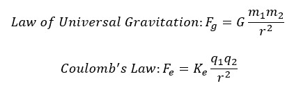
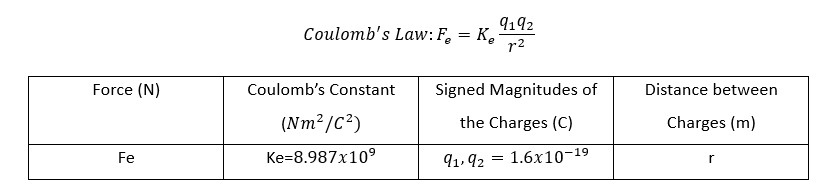
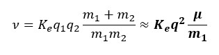
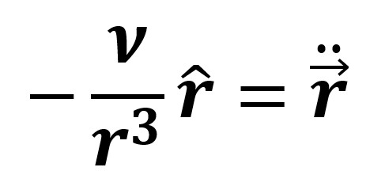
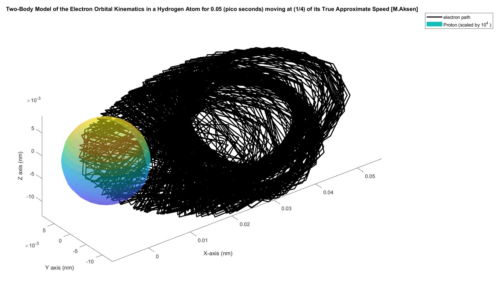
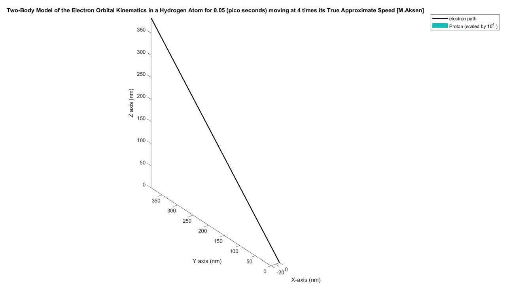
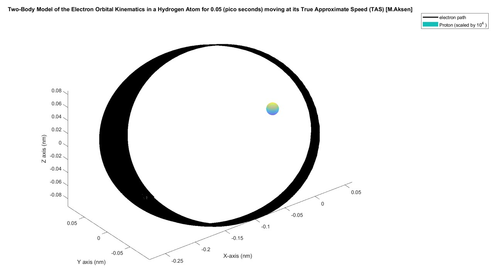

Atomic Orbital Kinematics
I initially came up with this topic by recognizing the similarities between space orbitals, with satellites orbiting planets, and atomic orbitals, with electrons orbiting the atomic nucleus. Extending this idea further, is it possible that an atomic orbital itself is a reflection of a planetary orbit and there is an entire universe inside an atom? Also, it is noteworthy that the Coulomb law dictating electromagnetic forces in an atomic orbital resembles the Law of Universal Gravitation dictating gravitational forces in a planetary orbit.
For this project, the hydrogen atom with one proton and one electron was modelled. Therefore, the two-body problem studied in Spaceflight Mechanics was applied as there are only two bodies of interest in the hydrogen atomic orbital. The two-body problem outlines a derivation of the orbital kinematics of two bodies that are only affected by the gravitational forces acting on one another. Atomic orbitals operate as a result of the electromagnetic force rather than the gravitational force. Therefore, Coulomb’s Law, which dictates the effect of the electromagnetic force, must replace Newton’s Law of Universal Gravitation.
With this new fundamental law, the Equations of Motion (EoM) which govern the kinematics of the atomic orbital were revised. The proton was assumed to be stationary so the orbital kinematics could be expressed in the Proton-Centered Inertial (PCI) frame. The form was then simplified because it is known that mass_electron << mass_proton. Afterward, a proton-to-electron mass ratio, μ, was established. In addition, the charge of the electron and proton is known to be equivalent. Therefore, q_electron=q_proton=q. Subsequently, a standard electrostatic constant, ν, was derived where m1 = m_proton.
Finally, shown below is the governing equation of motion for the atomic orbital, where r is the position of the electron in the PCI frame:
The system was modelled and simulated in MATLAB using the State-Space formulation of the 2nd order ODE shown above and then numerically propagated using the ode45 numerical solver. Modeling the hydrogen atomic orbital in MATLAB was difficult because the system was very prone to instability and using numbers that were slightly off would either cause the electron to crash into the proton or the electron would be ejected outside of the orbital domain. Therefore, a lot of calibration was required to make the system relatively stable. The figures below show the orbit of the electron when the velocity is either too high or too low:
 However, after some calibration I found that an initial velocity of 2x10^6 (nm/ns)=2000 (km/s) keeps the system relatively stable. The figure below shows the system propagated for 0.05 pico seconds. The proton is scaled by a factor of 10^4 so its relative position would be visible:
From a cited source, the approximate velocity of an electron in the first energy level of a hydrogen atom was shown to be 2.19x10^6 m/s . This demonstrates that using the derived EoM, one can computationally determine the approximate velocity of an electron in a stable orbit to within 8.7% of the agreed upon value using the two-body approximation and the ode45 numerical solver.
There are several distinct limitations of the methods in this paper to describe the hydrogen atomic orbital. An electron travels at a fraction of the speed of light which causes relativistic effects that distort Newtonian Mechanics. In addition, in quantum mechanics, an electron’s position is never definitively known. Rather its position is expressed as a probabilistic time-dependent wave function, so validating the methods described in this paper may not be possible. Despite the academic community discarding the Sommerfeld-Bohr planetary atomic model, I think it is still interesting to explore how the electron’s true behavior contrasts its expected behavior from classical mechanics. I also thought it was interesting how the numerical results came within 9% of the true velocity of the electron in a hydrogen atomic orbit.
The final report for the project can be found here:
Final ReportContact Me
Email (preferred contact method): michael.aksen@gmail.com
Phone #: 201-982-1776